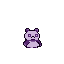

🛠️
Lagi Beres-beres!
Sistem Absensi Beloved Kids Cito sedang dalam perbaikan rutin biar webnya makin sat-set dan nyaman dipake.
Tunggu sebentar ya, kita bakal balik lagi secepatnya!
Sistem Absensi Beloved Kids Cito sedang dalam perbaikan rutin biar webnya makin sat-set dan nyaman dipake.
Tunggu sebentar ya, kita bakal balik lagi secepatnya!
